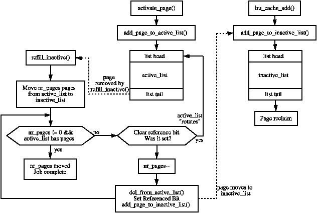
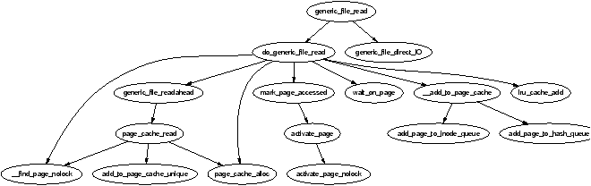
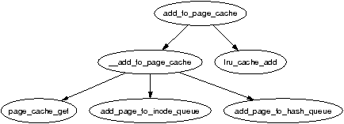
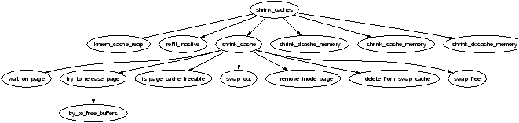

| Figure 10.5: Call Graph: swap_out() |
A running system will eventually use all available page frames for purposes like disk buffers, dentries, inode entries, process pages and so on. Linux needs to select old pages which can be freed and invalidated for new uses before physical memory is exhausted. This chapter will focus exclusively on how Linux implements its page replacement policy and how different types of pages are invalidated.
The methods Linux uses to select pages are rather empirical in nature and the theory behind the approach is based on multiple different ideas. It has been shown to work well in practice and adjustments are made based on user feedback and benchmarks. The basics of the page replacement policy is the first item of discussion in this Chapter.
The second topic of discussion is the Page cache. All data that is read from disk is stored in the page cache to reduce the amount of disk IO that must be performed. Strictly speaking, this is not directly related to page frame reclamation, but the LRU lists and page cache are closely related. The relevant section will focus on how pages are added to the page cache and quickly located.
This will being us to the third topic, the LRU lists. With the exception of the slab allocator, all pages in use by the system are stored on LRU lists and linked together via page→lru so they can be easily scanned for replacement. The slab pages are not stored on the LRU lists as it is considerably more difficult to age a page based on the objects used by the slab. The section will focus on how pages move through the LRU lists before they are reclaimed.
From there, we'll cover how pages belonging to other caches, such as the dcache, and the slab allocator are reclaimed before talking about how process-mapped pages are removed. Process mapped pages are not easily swappable as there is no way to map struct pages to PTEs except to search every page table which is far too expensive. If the page cache has a large number of process-mapped pages in it, process page tables will be walked and pages swapped out by swap_out() until enough pages have been freed but this will still have trouble with shared pages. If a page is shared, a swap entry is allocated, the PTE filled with the necessary information to find the page in swap again and the reference count decremented. Only when the count reaches zero will the page be freed. Pages like this are considered to be in the Swap cache.
Finally, this chaper will cover the page replacement daemon kswapd, how it is implemented and what it's responsibilities are.
During discussions the page replacement policy is frequently said to be a Least Recently Used (LRU)-based algorithm but this is not strictly speaking true as the lists are not strictly maintained in LRU order. The LRU in Linux consists of two lists called the active_list and inactive_list. The objective is for the active_list to contain the working set [Den70] of all processes and the inactive_list to contain reclaim canditates. As all reclaimable pages are contained in just two lists and pages belonging to any process may be reclaimed, rather than just those belonging to a faulting process, the replacement policy is a global one.
The lists resemble a simplified LRU 2Q [JS94] where two lists called Am and A1 are maintained. With LRU 2Q, pages when first allocated are placed on a FIFO queue called A1. If they are referenced while on that queue, they are placed in a normal LRU managed list called Am. This is roughly analogous to using lru_cache_add() to place pages on a queue called inactive_list (A1) and using mark_page_accessed() to get moved to the active_list (Am). The algorithm describes how the size of the two lists have to be tuned but Linux takes a simpler approach by using refill_inactive() to move pages from the bottom of active_list to inactive_list to keep active_list about two thirds the size of the total page cache. Figure ?? illustrates how the two lists are structured, how pages are added and how pages move between the lists with refill_inactive().

Figure 10.1: Page Cache LRU Lists
The lists described for 2Q presumes Am is an LRU list but the list in Linux closer resembles a Clock algorithm [Car84] where the hand-spread is the size of the active list. When pages reach the bottom of the list, the referenced flag is checked, if it is set, it is moved back to the top of the list and the next page checked. If it is cleared, it is moved to the inactive_list.
The Move-To-Front heuristic means that the lists behave in an LRU-like manner but there are too many differences between the Linux replacement policy and LRU to consider it a stack algorithm [MM87]. Even if we ignore the problem of analysing multi-programmed systems [CD80] and the fact the memory size for each process is not fixed , the policy does not satisfy the inclusion property as the location of pages in the lists depend heavily upon the size of the lists as opposed to the time of last reference. Neither is the list priority ordered as that would require list updates with every reference. As a final nail in the stack algorithm coffin, the lists are almost ignored when paging out from processes as pageout decisions are related to their location in the virtual address space of the process rather than the location within the page lists.
In summary, the algorithm does exhibit LRU-like behaviour and it has been shown by benchmarks to perform well in practice. There are only two cases where the algorithm is likely to behave really badly. The first is if the candidates for reclamation are principally anonymous pages. In this case, Linux will keep examining a large number of pages before linearly scanning process page tables searching for pages to reclaim but this situation is fortunately rare.
The second situation is where there is a single process with many file backed resident pages in the inactive_list that are being written to frequently. Processes and kswapd may go into a loop of constantly “laundering” these pages and placing them at the top of the inactive_list without freeing anything. In this case, few pages are moved from the active_list to inactive_list as the ratio between the two lists sizes remains not change significantly.
The page cache is a set of data structures which contain pages that are backed by regular files, block devices or swap. There are basically four types of pages that exist in the cache:
The principal reason for the existance of this cache is to eliminate unnecessary disk reads. Pages read from disk are stored in a page hash table which is hashed on the struct address_space and the offset which is always searched before the disk is accessed. An API is provided that is responsible for manipulating the page cache which is listed in Table 10.1.
Table 10.1: Page Cache API
There is a requirement that pages in the page cache be quickly located. To facilitate this, pages are inserted into a table page_hash_table and the fields page→next_hash and page→pprev_hash are used to handle collisions.
The table is declared as follows in mm/filemap.c:
45 atomic_t page_cache_size = ATOMIC_INIT(0); 46 unsigned int page_hash_bits; 47 struct page **page_hash_table;
The table is allocated during system initialisation by page_cache_init() which takes the number of physical pages in the system as a parameter. The desired size of the table (htable_size) is enough to hold pointers to every struct page in the system and is calculated by
htable_size = num_physpages * sizeof(struct page *)
To allocate a table, the system begins with an order allocation large enough to contain the entire table. It calculates this value by starting at 0 and incrementing it until 2order > htable_size. This may be roughly expressed as the integer component of the following simple equation.
order = log2(num_physpages * 2 - 1)
An attempt is made to allocate this order of pages with __get_free_pages(). If the allocation fails, lower orders will be tried and if no allocation is satisfied, the system panics.
The value of page_hash_bits is based on the size of the table for use with the hashing function _page_hashfn(). The value is calculated by successive divides by two but in real terms, this is equivalent to:
page_hash_bits = log2( (PAGE_SIZE * 2^order) / (sizeof(struct page *)) )
This makes the table a power-of-two hash table which negates the need to use a modulus which is a common choice for hashing functions.
The inode queue is part of the struct address_space introduced in Section 4.4.2. The struct contains three lists: clean_pages is a list of clean pages associated with the inode; dirty_pages which have been written to since the list sync to disk; and locked_pages which are those currently locked. These three lists in combination are considered to be the inode queue for a given mapping and the page→list field is used to link pages on it. Pages are added to the inode queue with add_page_to_inode_queue() which places pages on the clean_pages lists and removed with remove_page_from_inode_queue().
Pages read from a file or block device are generally added to the page cache to avoid further disk IO. Most filesystems use the high level function generic_file_read() as their file_operations→read(). The shared memory filesystem, which is covered in Chatper 12, is one noteworthy exception but, in general, filesystems perform their operations through the page cache. For the purposes of this section, we'll illustrate how generic_file_read() operates and how it adds pages to the page cache.
For normal IO1, generic_file_read() begins with a few basic checks before calling do_generic_file_read(). This searches the page cache, by calling __find_page_nolock() with the pagecache_lock held, to see if the page already exists in it. If it does not, a new page is allocated with page_cache_alloc(), which is a simple wrapper around alloc_pages(), and added to the page cache with __add_to_page_cache(). Once a page frame is present in the page cache, generic_file_readahead() is called which uses page_cache_read() to read the page from disk. It reads the page using mapping→a_ops→readpage(), where mapping is the address_space managing the file. readpage() is the filesystem specific function used to read a page on disk.

Figure 10.2: Call Graph: generic_file_read()
Anonymous pages are added to the swap cache when they are unmapped from a process, which will be discussed further in Section 11.4. Until an attempt is made to swap them out, they have no address_space acting as a mapping or any offset within a file leaving nothing to hash them into the page cache with. Note that these pages still exist on the LRU lists however. Once in the swap cache, the only real difference between anonymous pages and file backed pages is that anonymous pages will use swapper_space as their struct address_space.
Shared memory pages are added during one of two cases. The first is during shmem_getpage_locked() which is called when a page has to be either fetched from swap or allocated as it is the first reference. The second is when the swapout code calls shmem_unuse(). This occurs when a swap area is being deactivated and a page, backed by swap space, is found that does not appear to belong to any process. The inodes related to shared memory are exhaustively searched until the correct page is found. In both cases, the page is added with add_to_page_cache().

Figure 10.3: Call Graph: add_to_page_cache()
As stated in Section 10.1, the LRU lists consist of two lists called active_list and inactive_list. They are declared in mm/page_alloc.c and are protected by the pagemap_lru_lock spinlock. They, broadly speaking, store the “hot” and “cold” pages respectively, or in other words, the active_list contains all the working sets in the system and inactive_list contains reclaim canditates. The API which deals with the LRU lists that is listed in Table 10.2.
Table 10.2: LRU List API
When caches are being shrunk, pages are moved from the active_list to the inactive_list by the function refill_inactive(). It takes as a parameter the number of pages to move, which is calculated in shrink_caches() as a ratio depending on nr_pages, the number of pages in active_list and the number of pages in inactive_list. The number of pages to move is calculated as
nr_pages * nr_active_pages / ((nr_inactive_pages + 1) * 2)
This keeps the active_list about two thirds the size of the inactive_list and the number of pages to move is determined as a ratio based on how many pages we desire to swap out (nr_pages).
Pages are taken from the end of the active_list. If the PG_referenced flag is set, it is cleared and the page is put back at top of the active_list as it has been recently used and is still “hot”. This is sometimes referred to as rotating the list. If the flag is cleared, it is moved to the inactive_list and the PG_referenced flag set so that it will be quickly promoted to the active_list if necessary.
The function shrink_cache() is the part of the replacement algorithm which takes pages from the inactive_list and decides how they should be swapped out. The two starting parameters which determine how much work will be performed are nr_pages and priority. nr_pages starts out as SWAP_CLUSTER_MAX, currently defined as 32 in mm/vmscan.c. The variable priority starts as DEF_PRIORITY, currently defined as 6 in mm/vmscan.c.
Two parameters, max_scan and max_mapped determine how much work the function will do and are affected by the priority. Each time the function shrink_caches() is called without enough pages being freed, the priority will be decreased until the highest priority 1 is reached.
The variable max_scan is the maximum number of pages will be scanned by this function and is simply calculated as
max_scan = nr_inactive_pages / priority
where nr_inactive_pages is the number of pages in the inactive_list. This means that at lowest priority 6, at most one sixth of the pages in the inactive_list will be scanned and at highest priority, all of them will be.
The second parameter is max_mapped which determines how many process pages are allowed to exist in the page cache before whole processes will be swapped out. This is calculated as the minimum of either one tenth of max_scan or
nr_pages << (10 - priority)
In other words, at lowest priority, the maximum number of mapped pages allowed is either one tenth of max_scan or 16 times the number of pages to swap out (nr_pages) whichever is the lower number. At high priority, it is either one tenth of max_scan or 512 times the number of pages to swap out.
From there, the function is basically a very large for-loop which scans at most max_scan pages to free up nr_pages pages from the end of the inactive_list or until the inactive_list is empty. After each page, it checks to see whether it should reschedule itself so that the swapper does not monopolise the CPU.
For each type of page found on the list, it makes a different decision on what to do. The different page types and actions taken are handled in this order:
Page is mapped by a process. This jumps to the page_mapped label which we will meet again in a later case. The max_mapped count is decremented. If it reaches 0, the page tables of processes will be linearly searched and swapped out by the function swap_out()
Page is locked and the PG_launder bit is set. The page is locked for IO so could be skipped over. However, if the PG_launder bit is set, it means that this is the second time the page has been found locked so it is better to wait until the IO completes and get rid of it. A reference to the page is taken with page_cache_get() so that the page will not be freed prematurely and wait_on_page() is called which sleeps until the IO is complete. Once it is completed, the reference count is decremented with page_cache_release(). When the count reaches zero, the page will be reclaimed.
Page is dirty, is unmapped by all processes, has no buffers and belongs to a device or file mapping. As the page belongs to a file or device mapping, it has a valid writepage() function available via page→mapping→a_ops→writepage. The PG_dirty bit is cleared and the PG_launder bit is set as it is about to start IO. A reference is taken for the page with page_cache_get() before calling the writepage() function to synchronise the page with the backing file before dropping the reference with page_cache_release(). Be aware that this case will also synchronise anonymous pages that are part of the swap cache with the backing storage as swap cache pages use swapper_space as a page→mapping. The page remains on the LRU. When it is found again, it will be simply freed if the IO has completed and the page will be reclaimed. If the IO has not completed, the kernel will wait for the IO to complete as described in the previous case.
Page has buffers associated with data on disk. A reference is taken to the page and an attempt is made to free the pages with try_to_release_page(). If it succeeds and is an anonymous page (no page→mapping, the page is removed from the LRU and page_cache_released() called to decrement the usage count. There is only one case where an anonymous page has associated buffers and that is when it is backed by a swap file as the page needs to be written out in block-sized chunk. If, on the other hand, it is backed by a file or device, the reference is simply dropped and the page will be freed as usual when the count reaches 0.
Page is anonymous and is mapped by more than one process. The LRU is unlocked and the page is unlocked before dropping into the same page_mapped label that was encountered in the first case. In other words, the max_mapped count is decremented and swap_out called when, or if, it reaches 0.
Page has no process referencing it. This is the final case that is “fallen” into rather than explicitly checked for. If the page is in the swap cache, it is removed from it as the page is now sychronised with the backing storage and has no process referencing it. If it was part of a file, it is removed from the inode queue, deleted from the page cache and freed.
The function responsible for shrinking the various caches is shrink_caches() which takes a few simple steps to free up some memory. The maximum number of pages that will be written to disk in any given pass is nr_pages which is initialised by try_to_free_pages_zone() to be SWAP_CLUSTER_MAX. The limitation is there so that if kswapd schedules a large number of pages to be written to disk, it will sleep occasionally to allow the IO to take place. As pages are freed, nr_pages is decremented to keep count.
The amount of work that will be performed also depends on the priority initialised by try_to_free_pages_zone() to be DEF_PRIORITY. For each pass that does not free up enough pages, the priority is decremented for the highest priority been 1.
The function first calls kmem_cache_reap() (see Section 8.1.7) which selects a slab cache to shrink. If nr_pages number of pages are freed, the work is complete and the function returns otherwise it will try to free nr_pages from other caches.
If other caches are to be affected, refill_inactive() will move pages from the active_list to the inactive_list before shrinking the page cache by reclaiming pages at the end of the inactive_list with shrink_cache().
Finally, it shrinks three special caches, the dcache (shrink_dcache_memory()), the icache (shrink_icache_memory()) and the dqcache (shrink_dqcache_memory()). These objects are quite small in themselves but a cascading effect allows a lot more pages to be freed in the form of buffer and disk caches.

Figure 10.4: Call Graph: shrink_caches()
When max_mapped pages have been found in the page cache, swap_out() is called to start swapping out process pages. Starting from the mm_struct pointed to by swap_mm and the address mm→swap_address, the page tables are searched forward until nr_pages have been freed.
Figure 10.5: Call Graph: swap_out()
All process mapped pages are examined regardless of where they are in the lists or when they were last referenced but pages which are part of the active_list or have been recently referenced will be skipped over. The examination of hot pages is a bit costly but insignificant in comparison to linearly searching all processes for the PTEs that reference a particular struct page.
Once it has been decided to swap out pages from a process, an attempt will be made to swap out at least SWAP_CLUSTER_MAX number of pages and the full list of mm_structs will only be examined once to avoid constant looping when no pages are available. Writing out the pages in bulk increases the chance that pages close together in the process address space will be written out to adjacent slots on disk.
The marker swap_mm is initialised to point to init_mm and the swap_address is initialised to 0 the first time it is used. A task has been fully searched when the swap_address is equal to TASK_SIZE. Once a task has been selected to swap pages from, the reference count to the mm_struct is incremented so that it will not be freed early and swap_out_mm() is called with the selected mm_struct as a parameter. This function walks each VMA the process holds and calls swap_out_vma() for it. This is to avoid having to walk the entire page table which will be largely sparse. swap_out_pgd() and swap_out_pmd() walk the page tables for given VMA until finally try_to_swap_out() is called on the actual page and PTE.
The function try_to_swap_out() first checks to make sure that the page is not part of the active_list, has been recently referenced or belongs to a zone that we are not interested in. Once it has been established this is a page to be swapped out, it is removed from the process page tables. The newly removed PTE is then checked to see if it is dirty. If it is, the struct page flags will be updated to match so that it will get synchronised with the backing storage. If the page is already a part of the swap cache, the RSS is simply updated and the reference to the page is dropped, otherwise the process is added to the swap cache. How pages are added to the swap cache and synchronised with backing storage is discussed in Chapter 11.
During system startup, a kernel thread called kswapd is started from kswapd_init() which continuously executes the function kswapd() in mm/vmscan.c which usually sleeps. This daemon is responsible for reclaiming pages when memory is running low. Historically, kswapd used to wake up every 10 seconds but now it is only woken by the physical page allocator when the pages_low number of free pages in a zone is reached (see Section 2.2.1).
Figure 10.6: Call Graph: kswapd()
It is this daemon that performs most of the tasks needed to maintain the page cache correctly, shrink slab caches and swap out processes if necessary. Unlike swapout daemons such, as Solaris [MM01], which are woken up with increasing frequency as there is memory pressure, kswapd keeps freeing pages until the pages_high watermark is reached. Under extreme memory pressure, processes will do the work of kswapd synchronously by calling balance_classzone() which calls try_to_free_pages_zone(). As shown in Figure 10.6, it is at try_to_free_pages_zone() where the physical page allocator synchonously performs the same task as kswapd when the zone is under heavy pressure.
When kswapd is woken up, it performs the following:
As stated in Section 2.6, there is now a kswapd for every memory node in the system. These daemons are still started from kswapd() and they all execute the same code except their work is confined to their local node. The main changes to the implementation of kswapd are related to the kswapd-per-node change.
The basic operation of kswapd remains the same. Once woken, it calls balance_pgdat() for the pgdat it is responsible for. balance_pgdat() has two modes of operation. When called with nr_pages == 0, it will continually try to free pages from each zone in the local pgdat until pages_high is reached. When nr_pages is specified, it will try and free either nr_pages or MAX_CLUSTER_MAX * 8, whichever is the smaller number of pages.
The two main functions called by balance_pgdat() to free pages are shrink_slab() and shrink_zone(). shrink_slab() was covered in Section 8.8 so will not be repeated here. The function shrink_zone() is called to free a number of pages based on how urgent it is to free pages. This function behaves very similar to how 2.4 works. refill_inactive_zone() will move a number of pages from zone→active_list to zone→inactive_list. Remember as covered in Section 2.6, that LRU lists are now per-zone and not global as they are in 2.4. shrink_cache() is called to remove pages from the LRU and reclaim pages.
In 2.4, the pageout priority determined how many pages would be scanned. In 2.6, there is a decaying average that is updated by zone_adj_pressure(). This adjusts the zone→pressure field to indicate how many pages should be scanned for replacement. When more pages are required, this will be pushed up towards the highest value of DEF_PRIORITY << 10 and then decays over time. The value of this average affects how many pages will be scanned in a zone for replacement. The objective is to have page replacement start working and slow gracefully rather than act in a bursty nature.
In 2.4, a spinlock would be acquired when removing pages from the LRU list. This made the lock very heavily contended so, to relieve contention, operations involving the LRU lists take place via struct pagevec structures. This allows pages to be added or removed from the LRU lists in batches of up to PAGEVEC_SIZE numbers of pages.
To illustrate, when refill_inactive_zone() and shrink_cache() are removing pages, they acquire the zone→lru_lock lock, remove large blocks of pages and store them on a temporary list. Once the list of pages to remove is assembled, shrink_list() is called to perform the actual freeing of pages which can now perform most of it's task without needing the zone→lru_lock spinlock.
When adding the pages back, a new page vector struct is initialised with pagevec_init(). Pages are added to the vector with pagevec_add() and then committed to being placed on the LRU list in bulk with pagevec_release().
There is a sizable API associated with pagevec structs which can be seen in <linux/pagevec.h> with most of the implementation in mm/swap.c.